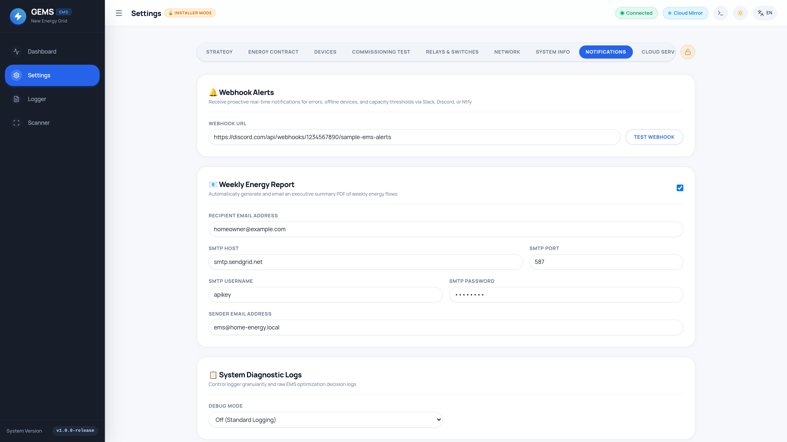

Manuel de Référence de Configuration & Paramètres
Ce manuel présente de manière exhaustive chaque paramètre de configuration disponible dans GEMS. Tous les réglages agissent directement sur le moteur de pilotage local et se configurent exclusivement depuis l'interface web.
1. Stratégies d'Optimisation du Site (`strategy_mode`)
Le moteur de stratégie exécute un cycle d'évaluation chaque seconde afin d'orchestrer les onduleurs solaires, le stockage par batterie et les bornes de recharge VE selon votre objectif prioritaire.


| Mode | Objectif visé | Action principale de régulation |
|---|---|---|
eco |
Maximiser l'autoconsommation solaire | Dirige le surplus solaire en priorité vers la batterie domestique, puis vers les bornes de recharge VE, et enfin vers les relais thermiques d'eau chaude. Ne bride pas l'import/export réseau hors règles d'arbitrage actives. |
flanders |
Écrêtage du Tarif Capacitaire (Capaciteitstarief) | Surveille la puissance moyenne de prélèvement sur chaque quart d'heure. Module dynamiquement les bornes VE et décharge la batterie pour plafonner les pointes mensuelles facturées. |
netherlands |
Zéro-Export & Compensation Intelligente | Évite les pénalités d'injection sur le réseau. Absorbe la production solaire dans les batteries/bornes VE ou bride activement la puissance des onduleurs lorsque le tarif d'injection devient négatif. |
2. Écrêtage Capacitaire Flandre & Suivi Mensuel (`flanders`)
En Flandre (Belgique), le tarif capacitaire (capaciteitstarief) facture les consommateurs en fonction de leur pointe mensuelle maximale de puissance moyenne prélevée sur 15 minutes (avec un plancher minimal de 2,5 kW).
Gestion Prédictive du Budget Quart-Horaire
Plutôt que d'attendre le dépassement d'une pointe, GEMS suit en continu l'énergie importée depuis le début de chaque fenêtre d'horloge de 15 minutes et ajuste de manière proactive les consignes des bornes VE, des relais intelligents et de décharge batterie sur les minutes restantes du quart d'heure, afin que la moyenne reste sous votre plafond moins la marge de sécurité.
GEMS enregistre dans SQLite la véritable pointe quart-horaire maximale du mois civil en cours (/api/peaks/monthly). Si une pointe inévitable survient (par ex. 4,2 kW causés par plusieurs appareils électroménagers simultanés), GEMS relève automatiquement son plafond opérationnel à 4,2 kW jusqu'à la fin du mois, accélérant la recharge VE et l'autoconsommation sans augmenter d'un centime votre facture capacitaire.
Paramètres clés d'écrêtage Flandre
| Clé de paramètre | Type | Défaut | Description |
|---|---|---|---|
capacity_peak_limit_kw |
Float (kW) | 2.50 |
Plafond maximal autorisé pour la puissance moyenne d'importation sur 15 minutes. |
peak_shaving_buffer_w |
Integer (W) | 200 |
Marge de sécurité retranchée du plafond cible pour absorber les appels de puissance brusques. |
peak_shaving_rampup_w |
Integer (W) | 500 |
Limite la vitesse de remontée en puissance des charges modulées (ex. bornes VE) lorsque la charge domestique diminue. |
3. Écrêtement Actif d'Onduleur & Protection des Certificats Verts (GSC)
Lors des épisodes de fort excédent renouvelable en Europe, les prix horaires Day-Ahead sur la bourse EPEX Spot peuvent devenir fortement négatifs. Pour protéger les particuliers contre les pénalités d'injection tout en garantissant que les installations subventionnées conservent l'intégralité de leurs certificats verts, GEMS intègre un écrêtement intelligent par seuil de rentabilité.
Paramètres Régionaux & d'Écrêtement Actif
| Clé de paramètre | Type | Défaut | Description |
|---|---|---|---|
region |
String | flanders |
Région réglementaire cible (flanders, brussels, wallonia ou netherlands). |
allowed_grid_export_kw |
Float (kW) | 0.0 |
Limite stricte d'injection continue vers le réseau. Réglez sur 0.0 pour un zéro-export intégral. |
active_inverter_curtailment |
Boolean | true |
Autorise le moteur Go à envoyer des consignes Modbus de limitation de puissance active (ex. SunSpec WMaxLimPct) aux onduleurs lorsque l'injection devient déficitaire. |
min_profitable_export_price |
Float (€/kWh) | 0.00 |
Seuil de prix d'injection de base en dessous duquel l'exportation vers le réseau génère une perte financière. |
gsc_value_eur_mwh |
Float (€/MWh) | 0.0 |
Valeur des certificats verts (Groenestroomcertificaten / CV) en € par 1 000 kWh (ex. 250 €/certificat). Décale d'autant le seuil d'écrêtement. |
Les propriétaires disposant d'installations photovoltaïques mises en service avant 2021 en Flandre bénéficient de certificats verts garantis. Si une installation perçoit 250 €/certificat (0,250 €/kWh), la production solaire reste rentable même à des prix spot négatifs descendant jusqu'à -250,0 €/MWh (-0,250 €/kWh) !
Exemple : 0,00 € - (250 € / 1000) = -0,250 €/kWh (-250,0 €/MWh)
GEMS propose des boutons de sélection directe pour tous les paliers standards : 0 €, 90 €, 210 €, 230 €, 250 €, 270 €, 330 €, 350 € et 450 €/MWh. L'écrêtement ne se déclenche QUE si la pénalité de marché dépasse le revenu de vos certificats.
4. Arbitrage Tarifaire Day-Ahead EPEX Spot
GEMS récupère automatiquement chaque jour à 14h00 CET les prix horaires du marché Day-Ahead pour l'ensemble des zones d'enchères européennes (EPEX Spot Belgique, Pays-Bas, Allemagne, France et Luxembourg).
Stratégies de Charge Batterie depuis le Réseau (`battery_grid_charge_strategy`)
price_only: Charge depuis le réseau dès que le prix horaire descend sousforce_charge_below_euro; décharge lorsque le prix dépasseforce_discharge_above_euro.super_dal_only: Restreint la charge réseau strictement aux plages super-heures creuses avantageuses définies par le fournisseur.hybrid: Combine le seuil de prix spot avec les fenêtres heures creuses contractuelles.dynamic_forecast: Le mode le plus avancé. Calcule une planification optimale sur 24 heures en croisant les prix EPEX, les prévisions d'ensoleillement Open-Meteo et le profil de consommation adaptatif du foyer (home_base_load_wen repli)—réservant l'énergie stockée aux pointes tarifaires, privilégiant le surplus solaire gratuit et couvrant la demande locale sans injection forcée.winter_fallback_enabled(Repli Hivernal / Faible Ensoleillement) : Lorsque l'état de charge (SoC) descend à ou souswinter_fallback_trigger_soc(par défaut25 %) en hiver ou par temps couvert et que la prévision solaire sur 24h est insuffisante, GEMS recharge automatiquement la batterie pendant leswinter_fallback_cheapest_hours(par défaut2heures) les moins chères de la journée jusqu'àwinter_fallback_target_soc(par défaut65 %).
Afin d'éviter toute dégradation prématurée des cellules LiFePO4, GEMS intègre le coût d'usure configuré par kWh cyclé (ex. 0,05 € / kWh) dans le calcul d'écart tarifaire. Un cycle d'arbitrage n'est exécuté que si l'écart de prix entre l'heure de charge et l'heure de décharge couvre le rendement aller-retour ainsi que le coût d'usure de la batterie.
5. Contrats d'Énergie & Formules Fournisseurs
Pour calculer avec exactitude vos coûts nets d'électricité en temps réel, GEMS applique la formule tarifaire exacte de votre fournisseur au prix spot EPEX dynamique.


Profils Fournisseurs Régionaux Pris en Charge
| Profil Fournisseur | Région | Paramètres de formule configurés |
|---|---|---|
| TotalEnergies Pixel Dynamic | Belgique | Répercussion EPEX Spot BE + coefficient (totalenergies_multiplier) + marge (totalenergies_markup) + redevance fixe annuelle (totalenergies_base_fee). |
| Mega Smart / Cosy Dynamic | Belgique | EPEX Spot BE + coefficient (mega_multiplier) + marge commerciale (mega_markup) + abonnement annuel (mega_base_fee). |
| Bolt Dynamisch | Belgique | Électricité verte locale avec répercussion directe EPEX Spot BE et marge plateforme transparente. |
| Engie Dynamic / Flextime | Belgique | Répercussion directe EPEX Day-Ahead ou tarification horosaisonnière (heures pleines, creuses, super-creuses). |
| Vattenfall Nederland — FlexPrijs | Pays-Bas | EPEX Spot NL (vattenfall_multiplier = 1.00, règlement 15m ou 60m) + marge d'approvisionnement (vattenfall_markup = 0.0211 €/kWh) + abonnement annuel (vattenfall_base_fee = 95.40 €/an) + taxe énergétique NL HTVA (2026 : 0.09161 €/kWh / 2027 : 0.08802 €/kWh) + TVA 21 %. |
| Luminus / Eneco / Frank / Ecopower | BE / NL | Multiplicateurs linéaires personnalisables, granularité spot 15m ou 60m, retenues sur injection et abonnements fixes mensuels. |
| Bi-horaire Belge & Fixe NL Post-2027 | BE / NL | Grilles jour/nuit associées aux tarifs GRD, plus les frais d'injection néerlandais post-saldering (fixed_feed_in_cost_kwh) et la vérification du plancher légal 2027–2029 (≥ 50 % du tarif de fourniture nu). |
| Enovos Dynamic | Luxembourg | enovos_markup, enovos_multiplier, enovos_inject_multiplier et frais de réseau Creos. |
Préréglages des Gestionnaires de Réseau de Distribution (GRD) & Taxes Légales
GEMS propose des préréglages HTVA en un clic pour les tarifs régionaux de distribution et la fiscalité énergétique 2026/2027 par kWh :
- Pays-Bas (Liander / Enexis / Stedin) : Préréglages légaux HTVA d'Energiebelasting pour 2026 (0,09161 € / kWh) et 2027 (0,08802 € / kWh) + TVA 21 %.
- Fluvius (Flandre) : 0,0204 € / kWh de distribution (plus accise fédérale spéciale 2027 à 0,0392 € / kWh) + TVA 6 %.
- ORES & RESA (Wallonie — Fixe ou CWaPE
Tarif Impact) : Préréglages fixes (0,0950 / 0,0920 € / kWh) ou grille officielle CWaPETarif Impact7j/7 (ECO01:00–07:00 & 11:00–17:00 : RESA 0,0252 € / ORES 0,0284 € ;MEDIUM07:00–11:00 & 22:00–01:00 : RESA 0,0755 € / ORES 0,0812 € ;PIC17:00–22:00 : RESA 0,1258 € / ORES 0,1345 € / kWh) + TVA 6 %. - SIBELGA (Bruxelles) : 0,0820 € / kWh (plus accise fédérale spéciale 2027 à 0,0392 € / kWh) + TVA 6 %.
6. Équilibrage Triphasé par Phase & Protection du Disjoncteur
Pour éviter toute disjonction de l'alimentation principale du bâtiment, GEMS surveille en permanence le courant de chaque phase ($L_1, L_2, L_3$) via le compteur communicant P1 ou un analyseur Modbus triphasé.
| Clé de paramètre | Type | Défaut | Description |
|---|---|---|---|
grid_nominal_current_a |
Integer (A) | 32 |
Calibre nominal du disjoncteur principal (ex. 25A, 32A, 40A, 63A). Réduit immédiatement la charge des bornes VE si l'appel total approche la limite. |
phase_limit_amps |
Float (A) | 25.0 |
Courant maximal autorisé sur une phase individuelle ($L_1, L_2 \text{ ou } L_3$). Évite le déclenchement lié à un fort déséquilibre entre phases. |
grid_system |
Enum | three_phase_400v |
single_phase_230v (monophasé), three_phase_400v (triphasé 400V+N) ou three_phase_230v (sans neutre / réseau belge 3x230V triangle). |
7. Relais Intelligents & Automatisation Pompe à Chaleur SG-Ready
Créez des règles de commutation autonome pour les modules Shelly, contacteurs Modbus et ballons d'eau chaude sanitaire dans Paramètres → Relais & Commutateurs.


Paramètres des règles
- Type de condition :
solar_export_exceeds: Active le relais lorsque l'injection solaire dépasse le seuil défini (ex. > 1500 W).grid_import_below: Active le relais lorsque le prélèvement réseau reste inférieur au seuil (ex. < 200 W).price_below: Active le relais lorsque le prix spot Day-Ahead descend sous le seuil choisi (ex. < 0,05 € / kWh).
min_run_time_seconds(Défaut : 300s) : Maintient le relais enclenché pendant au moins 5 minutes afin d'éviter les courts-cycles néfastes pour les compresseurs et contacteurs.min_off_time_seconds(Défaut : 300s) : Impose un temps de repos minimal de 5 minutes avant tout réenclenchement.
Matrice des 4 États Pompe à Chaleur SG-Ready
| État SG-Ready | Relais 1 (K1) | Relais 2 (K2) | Comportement de la Pompe à Chaleur |
|---|---|---|---|
| État 1 : Verrouillage (EVU-Sperre) | Fermé | Ouvert | Arrêt forcé pendant les heures de pointe tarifaire extrême (max. 2 heures consécutives). |
| État 2 : Fonctionnement normal | Ouvert | Ouvert | Régulation standard selon la loi d'eau interne et le thermostat d'ambiance. |
| État 3 : Boost Solaire | Ouvert | Fermé | Relève les consignes de chauffage et d'eau chaude sanitaire pour stocker le surplus PV sous forme thermique. |
| État 4 : Stockage thermique forcé | Fermé | Fermé | Force la puissance maximale du compresseur pendant les heures à prix spot négatif. |
8. Alertes Webhook, Rapports E-mail & Journaux de Diagnostic

| Catégorie | Clé de paramètre | Description |
|---|---|---|
| Alertes | alert_webhook_url |
URL HTTP POST recevant les alertes automatiques : pointe quart-horaire ≥ 90 %, 3 échecs consécutifs de lecture d'un équipement ou échec de récupération tarifaire. |
| Rapports e-mail | weekly_report_enabled |
Active la génération et l'envoi automatiques du rapport énergétique hebdomadaire au format PDF. |
| Serveur SMTP | smtp_host, smtp_port, smtp_username, smtp_password, smtp_sender, report_email |
Identifiants du serveur SMTP sortant utilisé pour l'expédition des rapports PDF. |
| Mises à jour OTA | github_token |
Jeton d'accès personnel optionnel permettant d'interroger l'API GitHub Releases sans limitation de débit par IP. |
| Journaux système | log_level |
Niveau de verbosité des journaux (INFO en exploitation normale, DEBUG pour un diagnostic approfondi). |
9. Cloud Central & Intégration GRID-EMS-SERVER
Configurez la télémétrie sortante et la synchronisation de flotte vers GRID-EMS-SERVER dans Paramètres → Serveur Cloud. Pour les spécifications détaillées du protocole et des schémas JSON, consultez le Guide de Connexion GRID-EMS-SERVER.

| Clé de paramètre | Type | Défaut | Description |
|---|---|---|---|
cloud_enabled |
Boolean | false |
Active ou désactive la synchronisation télémétrique sortante avec GRID-EMS-SERVER. |
cloud_server_url |
String (URL) | https://ems.newenergygrid.com |
URL du serveur cloud central. Peut pointer vers une instance dédiée ou auto-hébergée. |
cloud_pairing_token |
String | Vide | Jeton d'appairage matériel à usage unique généré depuis le portail central de gestion de flotte. |
cloud_serial_number |
String | Auto-détecté | Numéro de série matériel unique de l'unité edge (format : TCG-EMS-<asset_tag>, ex. TCG-EMS-83daf13d05f1adad). |
cloud_sync_interval_sec |
Integer (s) | 5 |
Cadence d'envoi de la télémétrie (de 2 à 60 secondes). |